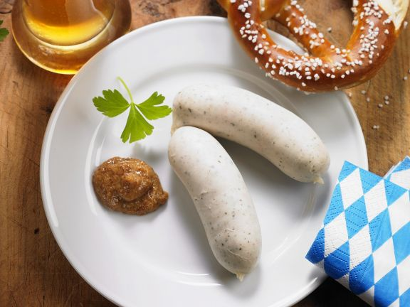

Weisswurst

Ingredients
- salt
- 8 white sausages
- 4 Prezels
- 4 tsp sweet mustard
Instructions
- Boil a large pot of water with one tsp of salt. Reduce heat and add the sausages. Let them sit for 5 minutes
- Remove sausages from water and serve with Prezels and bavarian sweet mustard
back to top of page
back to main page